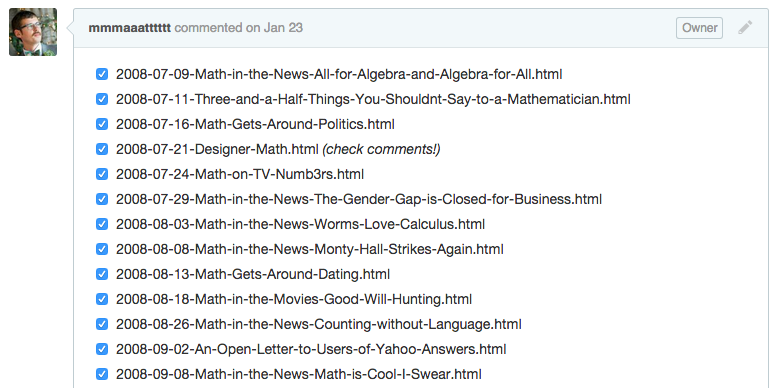

Hello, World!
Hi there! How are you? It's been a while. You're looking good, is that a new shirt?
Well, enough about you. Let's talk about Math Goes Pop. As you may have noticed, the output lately has been - to put it kindly - a little slow. Part of the reason for this is that I've been spending some of my free time retooling the blog. As a Tau Day gift, the fruits of my labors are now laid bare here before you.
Math Goes Pop has been rebuilt from the ground up. Aesthetics aside, the site is much the same as it was before, but hopefully feels a little cleaner and works a little better. I'd also like to tip my hat to Mira Gomha, who designed the new logo. If you want to see more of her work, you can check out her portfolio or give her a shout on Twitter.
Now that Math Goes Pop has a shiny new coat of digital paint, you can expect to see musings from me on a somewhat more regular basis. For now, I'll just leave you with a small puzzler that came to mind as I was migrating all the old posts from one corner of the Internet to another.
Moving the blog posts involved a bit more than cutting/pasting. In some cases, revisions to the style were required, and on rare occasion, comments from the Wordpress blog disappeared into the internet aether and I had to hunt them down. To help keep myself organized, I created a checklist:

With each file I checked off, I knew I was one step closer to completion.
At the same time, sometimes I was able to remove a post entirely, without having to worry about migrating it successfully. This happened with a few old posts that I drafted but never finished, as well as a handful of posts that were specific to the old blog and no longer applied to this iteration. When I encountered a post like this, I promptly deleted it from the checklist, effectively reducing the number of posts I had to migrate by 1.
Here's the question that came to mind: say that there are n posts I need to migrate, and I've already gone through k of them, for some k < n. Which has a greater effect on my completion percentage: migrating a post (i.e. increasing k by 1) or deleting a post from the list of things to migrate (i.e. decreasing n by 1)?
I'd encourage you to think about this on your own, but if instant gratification is more your speed, you can find the answer below.
tl;dr: I'm happy to be back! Let's hang out soon.
Since we're assuming I've migrated k posts out of a total of n, this quesiton is really asking us to compare two fractions: and . Let's start by examining when the first fraction is larger, i.e. when checking an item off the list has a greater impact than shortening the list by one.
The first fraction is larger precisely when
.
Clearing out the denominators, this is equivalent to
.
After expanding the left hand side, this is equivalent to
n ≥ k + 1.
But since k < n, the above inequality always holds. In other words, crossing something off the list always has a greater impact on completion percentage than removing something from the list entirely.